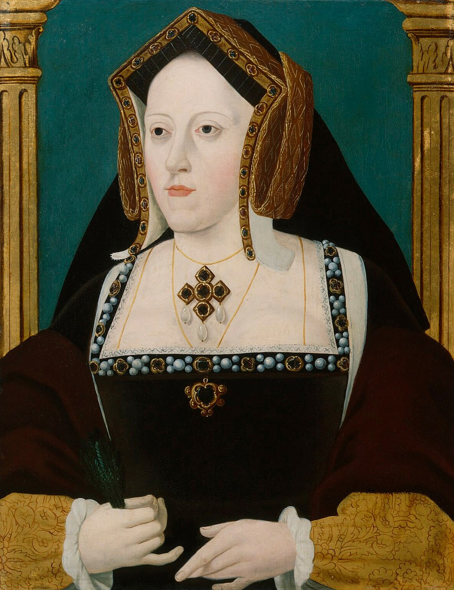

Sposò Enrico VIII nel 1509. Il loro matrimonio fu considerato stabile e legittimo fino alla crisi dinastica legata alla mancanza di un erede maschio.
Il rifiuto del Papa di annullare il matrimonio scatenò lo scisma inglese. Caterina difese la propria posizione fino alla fine.
Figura di grande dignità e religiosità, rappresentò la resistenza cattolica in Inghilterra in un momento cruciale della Riforma.